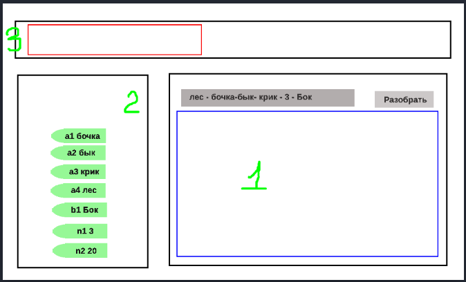
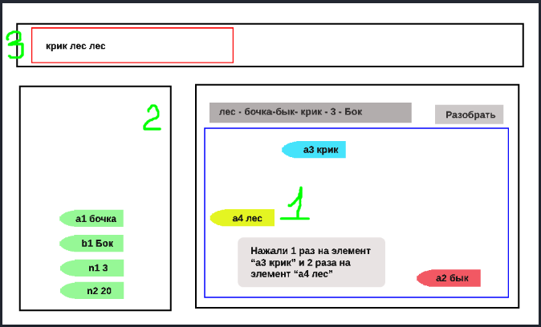

Описание задания
Задание выполняется на странице Вашего сайта. Отправляется архив с именем Word_LastName_Variant.
В текстовое поле вводится произвольная строка, где слова разделены знаком тире - , например:
Нужно создать, например, ассоциативный массив:
- сначала идут слова со строчной буквы, потом с заглавной, отсортированные по алфавиту с ключами а1, а2 и b1, b2 …
- потом цифры по возрастанию с ключами n1, n2 …
Красное и синее поле можно не делать, это чтобы вы понимали, где что размещается. Все блоки, которые были перетащены, можно двигать в пределах своего поля.
Вариант 3
После нажатия на кнопку Разобрать, слова размещаются в блоке 2 в элементах c закругленным краем.
Каждый из вновь созданных элементов можно перетащить в синий блок 1 в любое место, можно переставлять их местами, каждый элемент становится случайного цвета. При нажатии на элемент в синем блоке 1, в красном поле блока 3 отображается слово из нажатого элемента. Можно переместить элемент из поля 1 обратно в поле 2 и он встанет на прежнее место, в отсортированном порядке, с первоначальным цветом.
Выполненная работа
Ниже представлено выполненное задание: